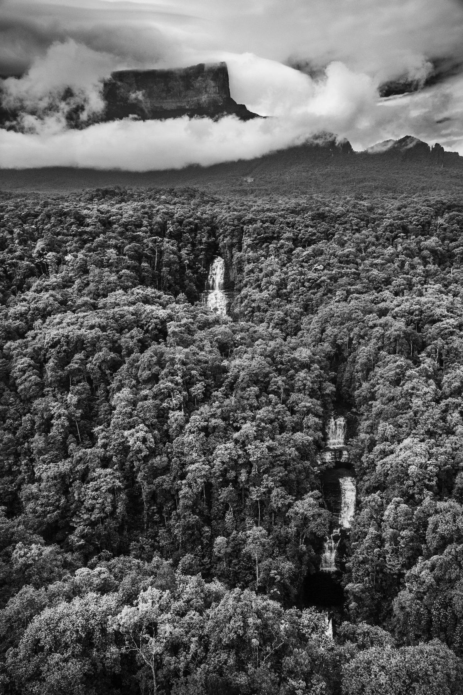

"#3180" — Estado de Roraima, Brasil, 2018
Amazônia, 2022 · Foto Digital · #3180 ERC-721
Uma das características mais extraordinárias — e talvez menos conhecidas — da floresta amazônica é um fenômeno conhecido de diversas formas como “rios voadores” ou “rios aéreos”. Pode parecer uma contradição falar de um “rio” que não pode ser visto, mas esses “rios voadores” transportam mais água do que o próprio Rio Amazonas e influenciam uma área maior da América do Sul e até mesmo além dela.
Cientistas estimam que, enquanto 17 bilhões de toneladas de água chegam diariamente ao Oceano Atlântico por meio do Rio Amazonas, cerca de 20 bilhões de toneladas de água sobem para a atmosfera a partir da floresta em um período semelhante. Por isso, a Amazônia recebeu o apelido de “Oceano Verde”, e essa enorme quantidade de água posteriormente deixa a região amazônica.
O que é realmente notável, porém, é a escala em que esse processo ocorre. Uma única árvore de grande porte pode absorver água de até 60 metros abaixo do solo e liberar até 1.000 litros de água por dia. Como esse processo se repete em cerca de 400 a 600 bilhões de árvores, é fácil compreender como a floresta amazônica gera uma parcela significativa da água que mais tarde recebe de volta.
De fato, até mesmo a água que chega ao continente por meio da evaporação da água do mar é rapidamente reciclada pela floresta em um processo tecnicamente conhecido como evapotranspiração.
Mas, se os “rios voadores” são vitais para o bem-estar econômico de dezenas de milhões de pessoas, principalmente no Brasil, eles também influenciam os padrões climáticos em todo o planeta e, por sua vez, são vulneráveis aos efeitos das mudanças climáticas.
| Artista | Sebastião Salgado |
| Coleção | Amazônia — 2022 |
| Mídia | Foto Digital |
| Token | #3180 ERC-721 (Ethereum) |
| Contrato | 0xf1f036ce…64fb80fc |
| Arquivo | Ver no Arweave |
| Procedência | Sotheby's (lançamento original) |